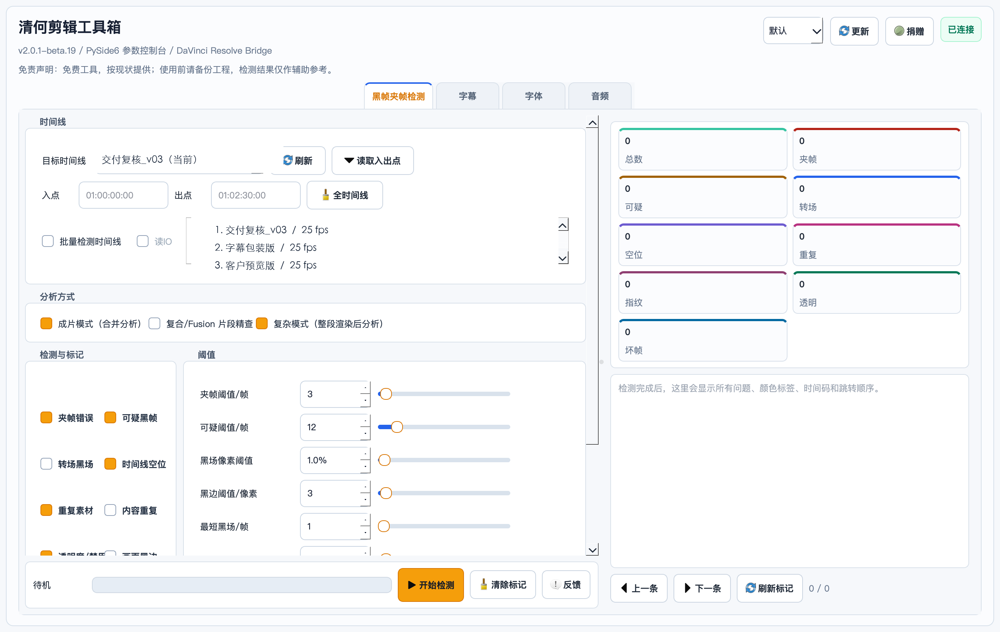
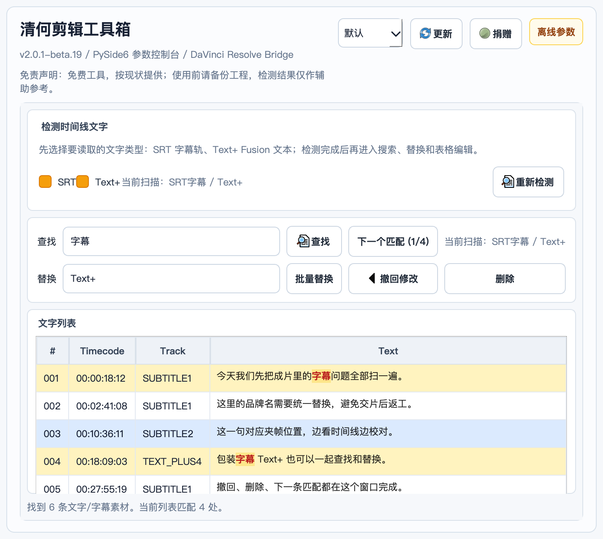
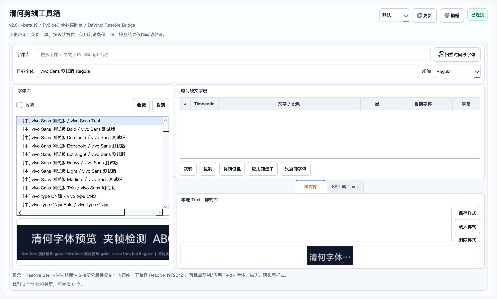
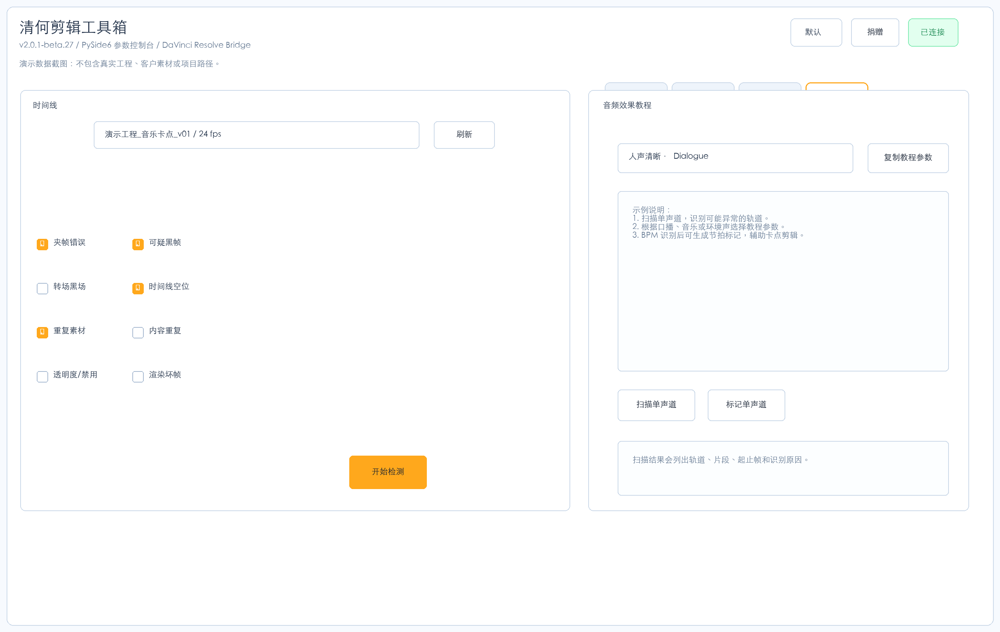
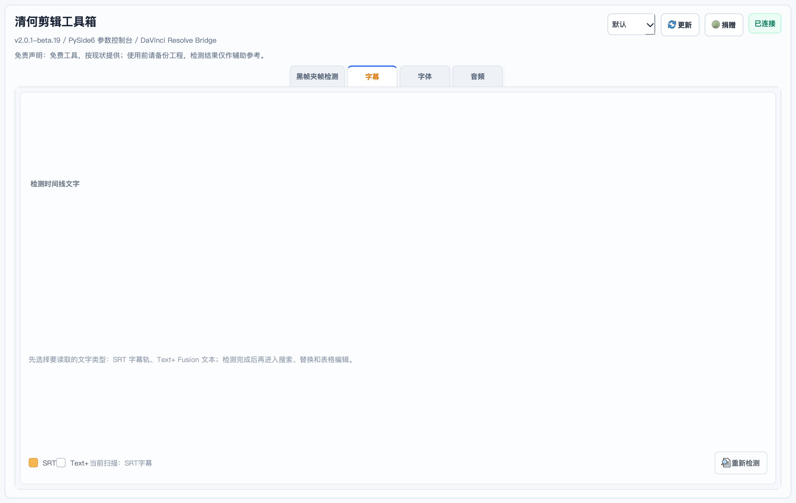
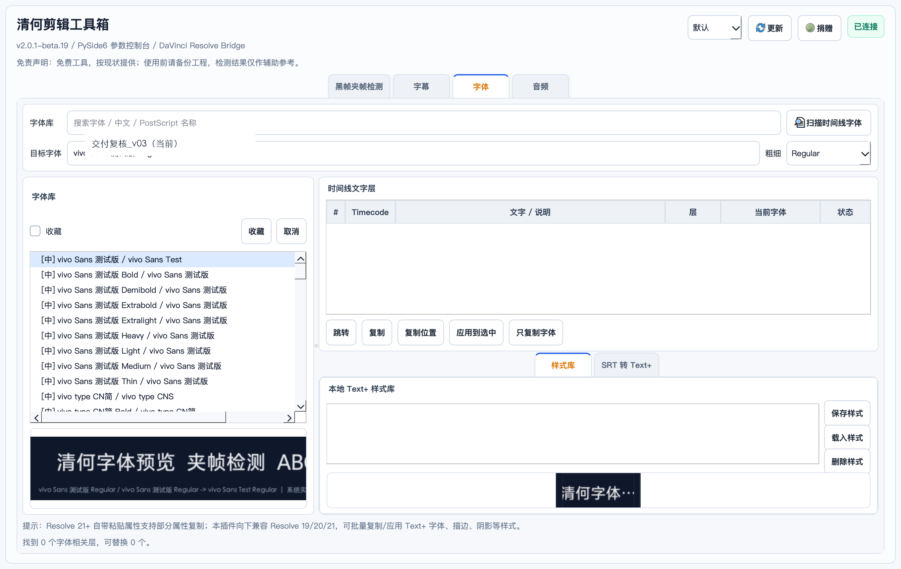

为交片前复核优化，减少长时间线等待。
DaVinci Resolve 剪辑质检插件
复杂时间线也能快速查
为真实剪辑工程做的交片前复核工具。黑帧、夹帧、重复素材、内容重复、时间线空位、放错目录素材归位、字幕、Text+、字体收集和节拍问题，尽量在 Resolve 里一次处理。
当前为内测版，持续优化中。恳请用户积极反馈真实工程里的问题。

多轨、Fusion、OFX、遮挡和最终像素进入流程。
围绕 Resolve 19、20、21 的字幕、Text+ 和粘贴属性差异持续处理兼容问题。
补查项目目录外的误放素材，复制归位并按需重链接。
真实界面看清每个面板
主面板、字幕面板、字体面板和音频面板分别对应交付前的高频风险点。页面截图来自 beta27 真实插件界面，字幕与字体内容均为官网演示数据，不包含真实项目内容。
主面板
交片前扫描时间线风险
集中检测黑帧、夹帧、重复素材、内容重复、透明度、黑边、渲染坏帧和时间线空位。结果会写回 Resolve 标记，按时间线位置逐条修。



不是普通黑帧脚本而是剪辑质检流程
主功能的差异在于速度、复杂时间线适应能力，以及把问题回写到剪辑现场。附加工具不是凑数，是剪辑师交付前最容易反复切换窗口处理的部分。
长时间线也要尽快出结果
围绕交片前复核设计，减少等待，把问题直接标回 Resolve。
多轨、透明遮挡Fusion 都进入流程
成片模式、复合与 Fusion 精查、复杂模式分别覆盖不同工程结构，适合包装层、嵌套和 OFX 很重的时间线。
不只看路径也看画面关系
改名、转码、同源复用和短异常片段，都尽量纳入复核逻辑。
常见交付风险放在一个面板
夹帧错误、可疑黑帧、转场黑场、时间线空位、重复素材、内容重复、透明禁用、画面黑边和渲染坏帧集中处理。
放错目录的素材重新归位
这是 Resolve 项目整理的补充工具，不替代 DaVinci Resolve 自带的媒体管理。它专门找出已经被时间线使用、却误放在项目素材目录之外的文件，帮助把这些漏网素材重新归纳并重链接；扫描只生成候选清单，实际归位由用户明确触发。
只检查这次真正用到的目录外素材
范围和黑帧检测保持一致，可聚焦当前剪辑，也能覆盖整个项目。所选项目素材目录会作为“正确位置”的基准，目录内文件不会被列入归位候选。
- 当前 I/O
- 只读取当前时间线入点到出点之间实际使用的素材。
- 指定时间线
- 从项目时间线列表中自由选择，不必切换 Resolve 当前时间线。
- 整个项目
- 遍历当前项目全部时间线，合并重复引用并保留使用位置。
Text+、SRT 和普通 Text 都进入扫描
读取 Text+ 文本层、字幕轨设置和普通 Text 的 DRT 样式字体；按字体家族和字重定位本机实际字体文件，再收集到手动选择的目录。
系统没有对应字体文件时仍显示 Resolve 记录的字体名和未匹配原因，但不会伪造文件或允许勾选。当前 SRT 支持检测与收集，不包含批量修改字体属性。
放错在哪里、被哪里使用都看清楚
项目目录外素材和缺失素材都会保留在结果表中，并显示路径、大小、状态和使用位置。右键文件可在 Finder 中显示；文件已缺失时，会打开能够定位到的上级目录。
正确目录和保留层级都由你选择
归位前必须手动选择目标目录。可从源路径前端或末端保留指定层级，并直接预览每个素材的目标目录；插件处理同名冲突和重复文件，也可让 Resolve 自动重链接。
失败时绝不提前删除原文件
“删除原文件”是独立可选项，只有新副本验证通过且 Resolve 重链接成功后才会执行；不删除时跳过额外哈希预检提速。后台进度显示当前文件、字节和速度，完成后弹窗汇总。
字幕、Text+、字体和节拍给剪辑师补上工具链
字幕面板
面向 Resolve 19、20、21 的字幕轨和 Text+ 做兼容处理。SRT、字幕轨和 Text+ 集中查找、替换、删除和撤回，适合短剧、口播、包装字幕最后一遍校对。
SRT 转 Text+
一键把 SRT 转成 Text+，方便做字体、描边、阴影和包装样式。
字体探针
识别中文名、英文名和 PostScript 名，并为 Text+、SRT 字体文件收集提供准确匹配。
样式库
Text+ 样式既能完整复制，也能只复制字体，适合统一包装风格。
BPM 节拍
识别 BPM，确定首拍，生成更适合剪辑卡点的节拍标记。


打开 DMG运行一键安装
当前公开测试包暂未做 Apple Developer 公证。首次安装建议右键打开“① 一键安装.command”。若 macOS 仍提示无法验证，可按下方终端命令移除隔离标记，安装完成后重启 DaVinci Resolve。
必须开启 DaVinci Resolve 脚本控制
插件需要通过 DaVinci Resolve 官方脚本接口读取当前项目、时间线、字幕、字体和媒体池。若提示 API 无法连接、扫描不到时间线或媒体池为空，请在 DaVinci Resolve 里打开“偏好设置 -> 系统 -> 常规”，把“外部脚本”设置为“本地”或“网络”，保存后重启 DaVinci Resolve，再从“工作区 -> 脚本 -> Edit”启动插件。
macOS 提示无法验证时
优先尝试右键打开。仍被拦截时，进入“系统设置 -> 隐私与安全性”，在安全性区域点击“仍要打开”。如果还打不开，可以打开“终端”，按实际下载位置执行下面命令：
xattr -dr com.apple.quarantine ~/Downloads/qinghe-toolbox-v2.0.1-beta.30-macos.dmg
open ~/Downloads/qinghe-toolbox-v2.0.1-beta.30-macos.dmg如果是一键安装脚本被拦截，可把 DMG 窗口里的“① 一键安装.command”拖进终端，或按实际卷名执行：
chmod +x "/Volumes/清何剪辑工具箱 v2.0.1-beta.30/① 一键安装.command"
xattr -dr com.apple.quarantine "/Volumes/清何剪辑工具箱 v2.0.1-beta.30/① 一键安装.command"
open "/Volumes/清何剪辑工具箱 v2.0.1-beta.30/① 一键安装.command"不建议关闭整台 Mac 的 Gatekeeper；只处理本次下载的 DMG 或安装脚本即可。
下载测试版。
macOS 使用 DMG 一键安装包，Windows 使用独立 EXE 安装器。两个平台分开下载，插件内自动更新也按平台读取对应包。
DMG 一键安装版
v2.0.1-beta.30 修复素材目录判定：归纳目录不再掩盖误放素材，修改归纳目录保留扫描结果；同时补充 macOS 原生字体目录索引，不依赖 fc-list。
EXE 一键安装版
Windows v2.0.1-beta.30 修复归纳目录被误作项目素材目录、导致遗落素材扫描结果错误归零的问题；修改归纳目录不再清空有效扫描结果。
百度网盘
达芬奇-清何剪辑工具箱，提取码 bsv8。
打开网盘使用前请备份工程
本工具按“现状”提供，检测结果仅作辅助参考，不保证找出所有问题。使用者应自行评估适用性，并在使用前做好项目备份。